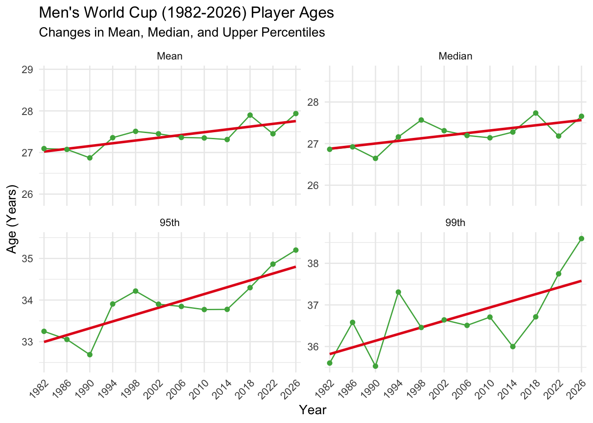
| Age, 1982 vs 2026 | ||||
| Year | Mean | Median | 95th | 99th |
|---|---|---|---|---|
| 1982 | 27.1 | 26.9 | 33.2 | 35.6 |
| 2026 | 27.9 | 27.7 | 35.2 | 38.6 |
| Change | 0.8 | 0.8 | 2.0 | 3.0 |
Lindsay Rankin
July 9, 2026
The 2026 Men’s World Cup will feature a record number of players over age 40 - nearly as many as all prior World Cups combined.
And just below 40 years old, players like the 38 year old Lionel Messi are also drawing attention for their staying power.
Are we really seeing an increase in high performance into older ages among World Cup players? Or is it just a bias in attention to a small number of unusually long careers likely coming to an end at the same tournament?
We’ll narrow this down to answerable questions we can explore about the ages of players selected to represent their country’s team (the “squad”): Are men’s World Cup squads getting older, and is there an increase in longevity?
While we can examine an overall increase in age with metrics like means or medians, what should represent longevity?
Article headlines and Instagram posts like to focus on the concrete idea of athletes 40+ year old. But it is a bit of an arbitrary cutoff (why not 39? Or 38? Or 35?). I am interested in something that can capture the slightly broader trend of players continuing to perform (or at least earn their spot on a squad) into what were previously highly unusual ages, but without having to a priori select an arbitrary cutoff.
A metric like the maximum age at any tournament is interesting, but it focuses on just the single most extreme individual, and therefore can be quite noisy.
I settled on upper percentiles: I can let the data tell me an age for a given percentage of players rather than having to chose an age cutoff and calculate the percentage of players. And I felt that upper percentiles could strike the right balance between focusing on some extremity in age but not being swung by just one extreme individual like the maximum. We can think of this similar to how research on high income often focuses not on the number of people above a certain threshold, but on changes in the income of, say, the upper 1% over time (a 99th percentile).
Given that there are at least 500 players in every tournament, a 95th percentile will tell us the age cutoff corresponding to at least the 26 or so oldest players. A 99th percentile will tell us the age cutoff corresponding to at least the five oldest players. In analyses detailed below, I confirmed that these two selections were not unusual compared to other upper percentile choices (i.e., 80th, 85th, or 90th percentiles). While a 99th percentile corresponded a bit more to the ages that I was imagining at just a gut level, in further analyses on subgroups the sample sizes become quite small making a 99th percentile have a number of downsides similar to the maximum. Thus, I used a 95th and 99th percentile in the main analyses, and solely rely on the 95th percentile when subgroup become quite small.
Overall, in the past several decades of the World Cup, there has been a trend of increase age (based on the means and medians increasing by .8 of a year or 9.6 months), a small increase. This is not driven by any change in avoiding younger players.
More dramatically, there has been a notable increase in longevity, that is, the small numbers of players at the upper end of age distributions are increasingly older. Specifically, when comparing the 2026 World Cup squads to the 1982 squads, the 95th percentile of age of players at each tournament (the oldest 5%) has increased by 2 years, and the 99th percentile (the oldest 1%) has increased by nearly 3 full years.

| Age, 1982 vs 2026 | ||||
| Year | Mean | Median | 95th | 99th |
|---|---|---|---|---|
| 1982 | 27.1 | 26.9 | 33.2 | 35.6 |
| 2026 | 27.9 | 27.7 | 35.2 | 38.6 |
| Change | 0.8 | 0.8 | 2.0 | 3.0 |
To dig into how we got to this conclusion and some more details…
Although there is great variability in individual player ages (calculated from the start date of each tournament), the average trend line of age has been generally increasing over time (with the notable exception of the decades immediately following World War II).
In terms of 40+ year old players, the first appeared in 1970 (an unused squad member for the Soviet Union, Lev Yashin), the oldest in 2018 (Egypt’s Essam El-Hadary at over 45 years), but the number of players at or even near 40 seems to have increased in recent years. There were seven men 40+ at the start of the 2026 tournament — compared to just nine total in all prior years.1
Based on age at the start date of the tournament.
| 2026 World Cup Players 40+ Years Old | |||
| Name | Team | Position | Age |
|---|---|---|---|
| Craig Gordon | Scotland | Goal keeper | 43.4 |
| Cristiano Ronaldo | Portugal | Forward | 41.3 |
| Guillermo Ochoa | Mexico | Goal keeper | 40.9 |
| Luka Modrić | Croatia | Midfielder | 40.8 |
| Edin Džeko | Bosnia and Herzegovina | Forward | 40.2 |
| Manuel Neuer | Germany | Goal keeper | 40.2 |
| Vozinha | Cape Verde | Goal keeper | 40.0 |
But drawing a line right at 40 does seem a bit arbitrary — and we can see that recent years have a number of older players just below this threshold.
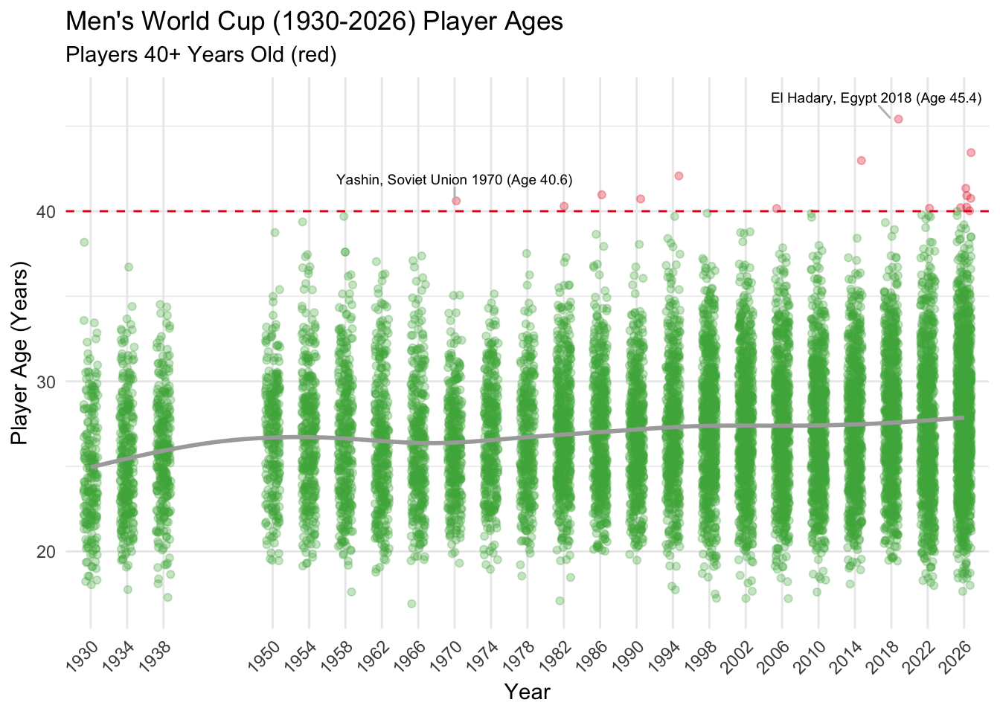
I had decided (a priori / before looking at this data) to focus my analysis to the time periods decades after the end of World War II. In addition to suspending the World Cup during the 1940’s, I would expect a number of lingering effects on potential players, particularly a limited pool of older players in the decades to follow.2 I am more interested in a general increase in longevity that could arguably be due to more interesting (to me) aspects like training, recovery, and wellness, rather than attributable to an external shock like war.
The 1982 World Cup could be referred to a the beginning of an “expansion era” of the tournament, as it increased from 16 to 24 teams. This format change is far enough out from the shadow of WWII to hopefully minimize those direct influences (someone born at the end of WWII in 1944 would be 38 years old by the 1982 tournament) and thus serves as a good conceptual cut point for the data, as well as providing a larger sample size of players.
Specifically, the tournament expanded in 1982 to 26 teams and a total of 526 players (a couple of squad spots were unused, and the total number of players was 528 for the next three tournaments). In the years since, the tournament experienced additional expansions in the number of teams and minor upticks in squad size, reaching 1248 players on 48 teams in 2026.
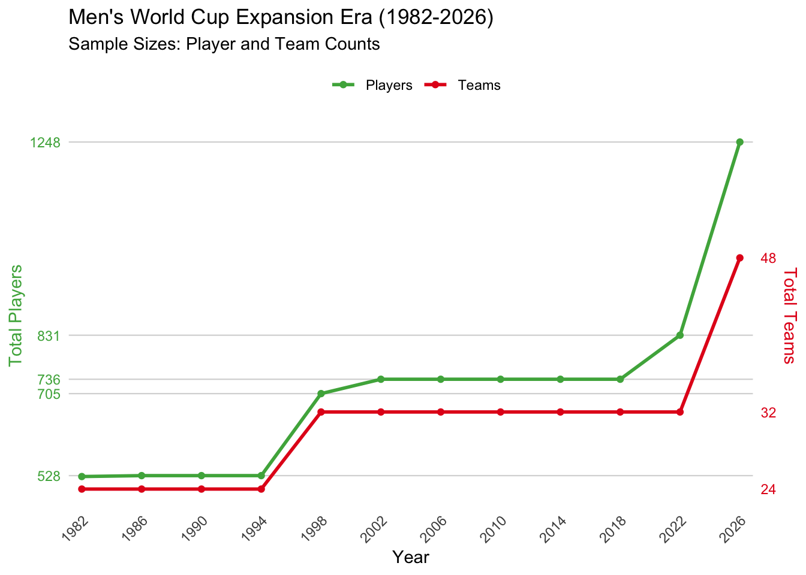
Age distributions in tournament years had small to medium positive skews (all < .43) and some outliers. I will focus primarily on means as representing the overall age increase (but medians are quite similar). We’ll also explore the patterns of change across percentiles as a way to understand other shifts in longevity (and youth), rather than a focus on the somewhat arbitrary line of 40 years old.
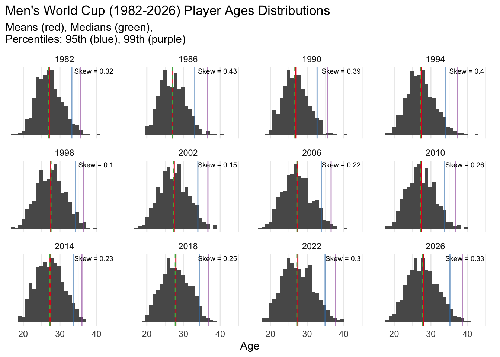
Using a regression fit line during the expansion era, predicted mean player age was increasing by .07 years or 25 days at each tournament since 1982.3 Collectively, this shows an increase from an average predicted age of 27.01 in 1982 to 27.78 in 2026, a bit over 3/4ths of a year increase - not a massive increase, but a non-trivial cumulative result.
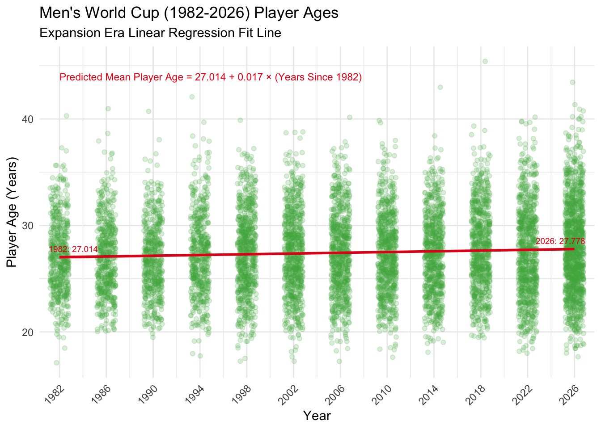
Because I’m primarily interested in older players, I would want to distinguish if mean ages was increasing just because younger players were being left off squads. To rule this out, I examined the trends in selecting younger players to squads. By focusing on the minimum age at each tournament (which does jump around a bit as it focuses on a single extreme individual) but also a number of lower percentiles, we can see that there is not any general increase in the younger end of players and might be a slight tendency to giving youth more of a chance. So changes in the mean are not being driven by the selection of fewer younger players - and if anything, could be hiding longevity increases if we were to just focus on the mean.
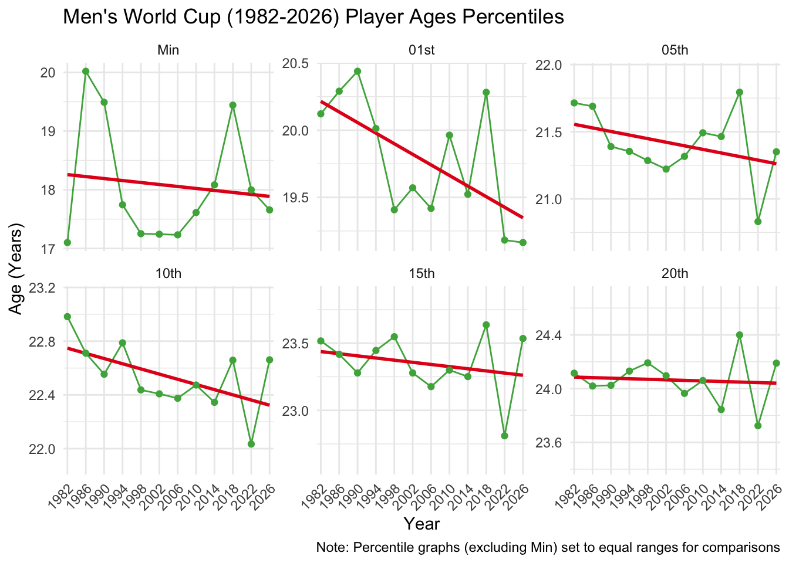
When trying to represent longevity of older players, upper percentile would be ideal (rather than a noisy and variable maximum or arbitrary cutoff of 40 years old) - and examining a number of upper percentiles, we see a consistent pattern of increases among them. Looking at just the two end points of the last 24 years of the expansion era (1982 vs 2026), even the 80th through 90th percentiles are increasing by over a year and half in age, and there is a two year increase in the 95th percentile of age and a three year increase in the 99th percentile.
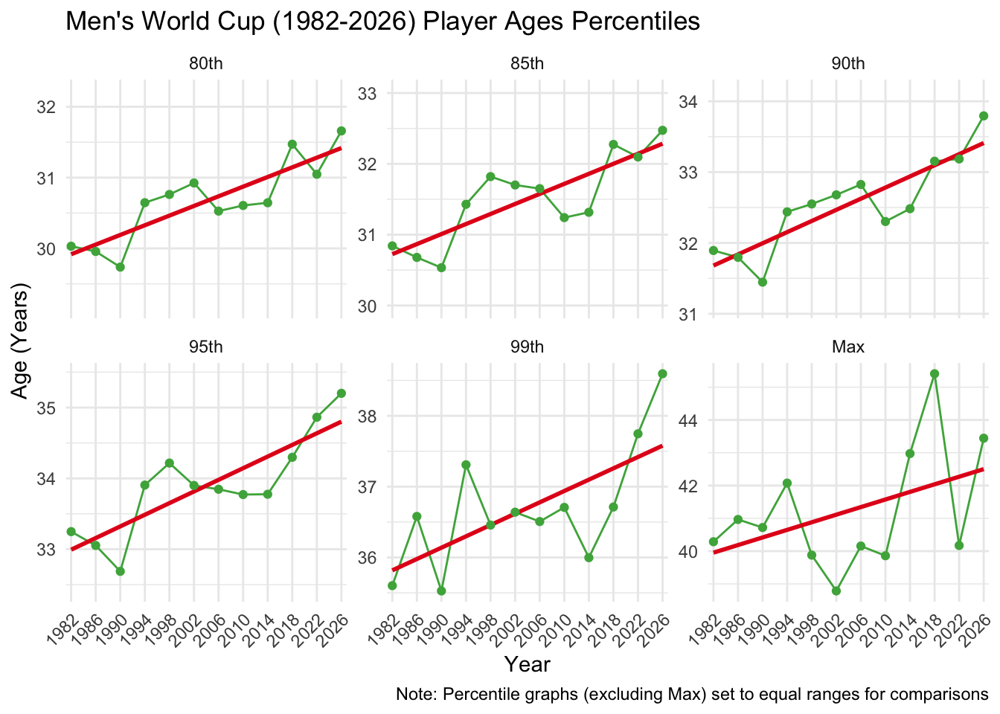
Both the 95th and 99th percentile seem like reasonable choices to track to represent longevity, as they correspond to ages of 35.2 and 38.6, respectively, in the 2026 World Cup.
| Older Age Percentiles, 1982 vs 2026 | ||||||
| Year | 80th | 85th | 90th | 95th | 99th | Max |
|---|---|---|---|---|---|---|
| 1982 | 30.0 | 30.8 | 31.9 | 33.2 | 35.6 | 40.3 |
| 2026 | 31.7 | 32.5 | 33.8 | 35.2 | 38.6 | 43.4 |
| Change | 1.6 | 1.6 | 1.9 | 2.0 | 3.0 | 3.2 |
Thus, as covered in the Executive Summary above, we concluded that yes we do see evidence of a general trend of overall increasing age, and a notable increase in players with exceptional longevity.
But to continue digging a bit deeper, is it limited to certain players or squads?
It has been noted that many of the oldest players at this and prior World Cups are goalkeepers, as they “typically face less physical wear and tear than outfield players, allowing many to extend their careers well into their late 30s and 40s.” But it was also noted that a surprising number of older veterans on 2026 squads were also field players (that is, the non-goal keeper positions of defenders, midfielders, and forwards).
Looking at the expansion era squads, we will focus on the mean and the longevity representation of the 95th percentile. (The 99th percentile is no longer a good option given the smaller sample sizes when splitting by position, particularly for the small number of goal keepers.)4 (Given the smaller sample sizes and thus greater variability in any particular year, I also switch to smooth lines to visually focus on the general patterns of change.)
Goal keepers are consistently older than field players (defenders, midfielders, and forwards), their average age is increasing, and there seem to increases in longevity as represented by their 95th percentile of age increasing. But field players are also showing increases in average age and increases in longevity.
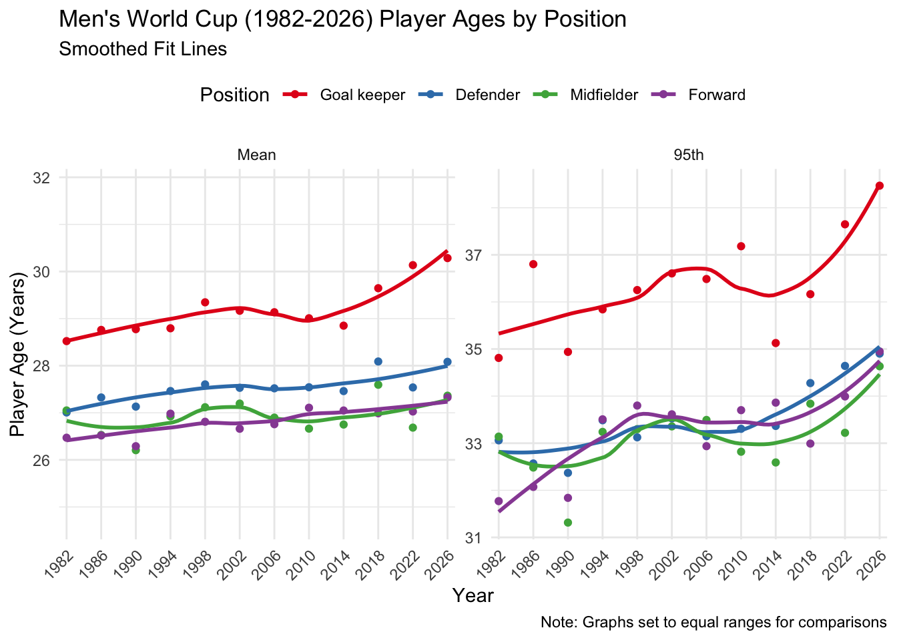
But how big are these changes? Looking at the ends points of these 24 years of data (1982 vs 2026), all positions showed noticeable increases on our longevity measure of the 95th percentile, with more than a three year increase for forwards as well as goal keepers across the expansion era - a pretty dramatic increase.
| Change in Age from 1982 to 2026 by Position | ||
| Position | Mean change | 95th change |
|---|---|---|
| Goal keeper | 1.8 | 3.7 |
| Defender | 1.1 | 1.8 |
| Midfielder | 0.3 | 1.5 |
| Forward | 0.8 | 3.2 |
Could changes in age of squads just be a byproduct of different approaches to squad creation by the qualifying teams in the expanded format? That is, perhaps the ‘extra’ teams making more recent World Cups (who would not have qualified for prior, smaller tournaments) differ in who they choose to represent their country.
Overall, in these follow up analyses I did not find anything clear or conclusive that could otherwise explain the changes in age. I am limited in some analyses to just mean age as the groups of interest become too small for the longevity measure of a 95th percentile (for example, when considering team variables there are no more than 26 squad members). But I offer just a few observations to end, and welcome other ideas - as I am pushing the limits of my soccer knowledge.
I looked at FIFA rankings5 at the beginning of the tournament (with worse rankings perhaps representing the teams who benefited from the ongoing expansion and may not have qualified in prior years of the tournament with smaller numbers of teams), but did not find much of a clear relationship with mean age.
FIFA rankings only began in 1992. I selected the most recent ranking up to or before the start date of the tournament. To consider the relationship of ages to FIFA rankings, it’s necessary to summarize the ages by team. While we can calculate a mean team age, the longevity measure of a 95th percentile is problematic when applied to such a small sized team, as the largest squad size is 26 players. Thus, here we only consider mean team age.
Ignoring the outlier (of a low FIFA rank over 100), there was not a clear overall relationship of FIFA rank and age; only when zooming in was there slight tendency among just the top 10 teams for the best ranked teams to be older.
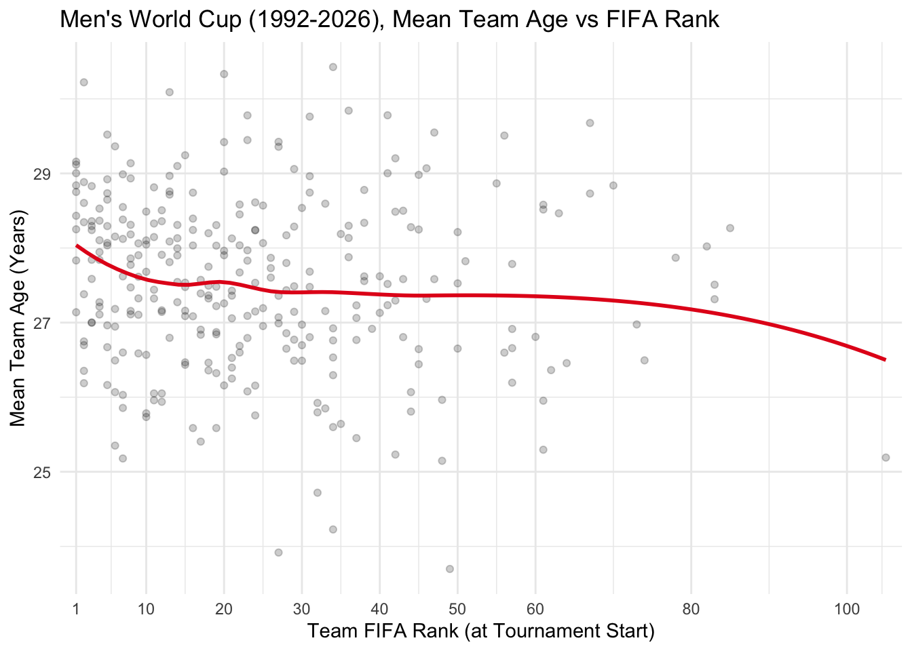
I did not find any clear relationships between a team’s number of appearances at the World Cup and the mean age of squad (the 2026 debut teams were a bit older but this was an anomaly in the overall patterns, as debut teams were a bit younger than others in most prior years).
When considering a team’s total number of appearances at all World Cups, it is again necessary to summarize the ages by team. While we can calculate a mean team age, the longevity measure of a 95th percentile is problematic when applied to such a small sized team, as the largest squad size is 26 players. Thus, here we only consider mean team age.
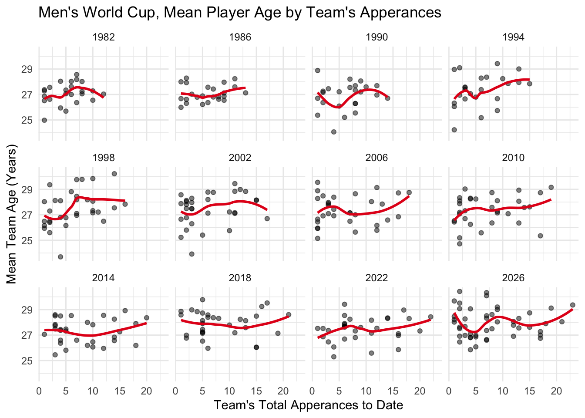
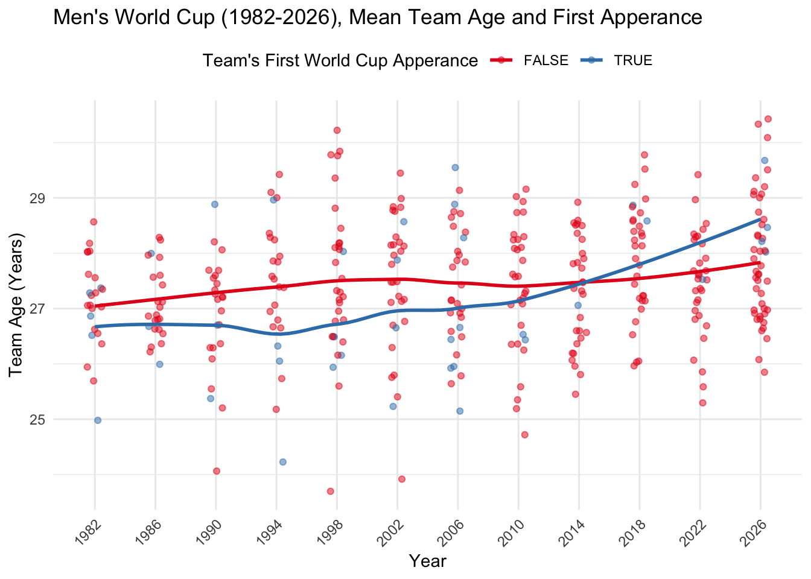
Similarly, while a few noteworthy small countries who have qualified in recent years had a bit older squads on average - with Cabo Verde’s team and their 40 year old goal keeper drawing particular attention — when excluding outliers (populations below 1 million or China’s one 2002 appearance at the upper end) there wasn’t any clear relationship between a country’s population and the average age of their squad.
Again, when considering a team’s country population, it is necessary to summarize the ages by team. While we can calculate a mean team age, the longevity measure of a 95th percentile is problematic when applied to such a small sized team, as the largest squad size is 26 players. Thus, here we only consider mean team age. Most countries had increasing populations over most of the time period; to not have a time confound confuse the relationship of interest, a country’s 2024 population was used to compare to their mean team ages for all tournament years (rather than matching to the population in that tournament year).
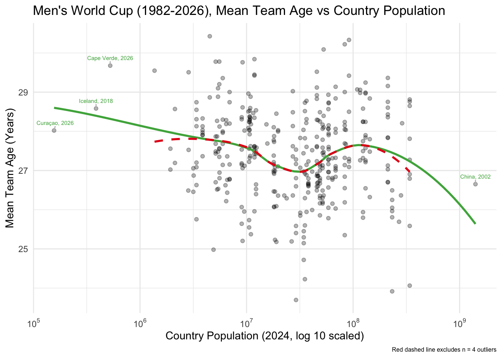
There are additional complicated forces in squad creation when considering the many players who could be eligible to compete for more than one country. Many players born in Europe have multiple eligibility, often to places outside of Europe, so I began exploring age patterns separately by football confederation (which broadly line up with regions). Interestingly, both European (UEFA) and African (CAF) teams did not show the typical pattern of an overall increase in average age (and showed quite opposite patterns). Those two confederations do show somewhat of an increase in the longevity measure of the 95th percentile, although it is noisier and less clear. However, the 95th percentiles should be particularly interpreted with caution given the small sample sizes when dividing by conference.
There were some small sample sizes by confederations, particularly in the 80’s and early 90’s. For example, many confederations contained only 44 total players, an thus a 95th percentile would cut out just before the two oldest players.
Note that the Oceania Football Confederation (OFC) has only had 3 teams in the World Cup during this time period and are excluded from all confederation analyses. European teams (UEFA) always had more than 285 players and are thus not a concern for sample size and usage of a 95th percentile. This graph just visualizes the sample sizes of the other confederations to help highlight the limitations of the 95th percentile.
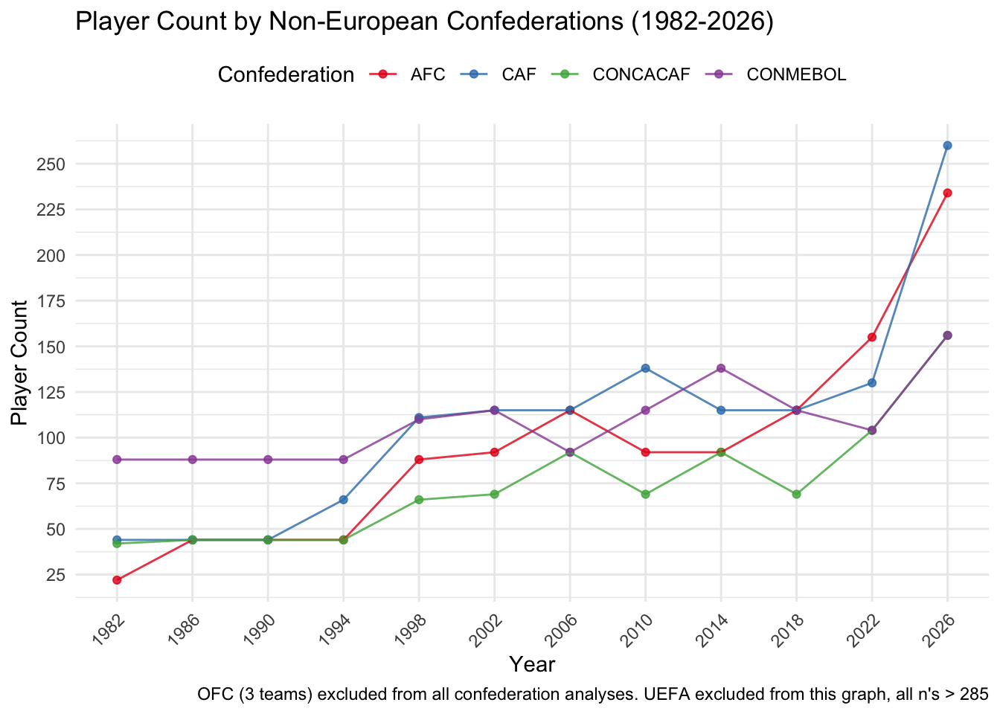
I don’t offer any interpretations here, but again welcome ideas or point others to try their own analyses!
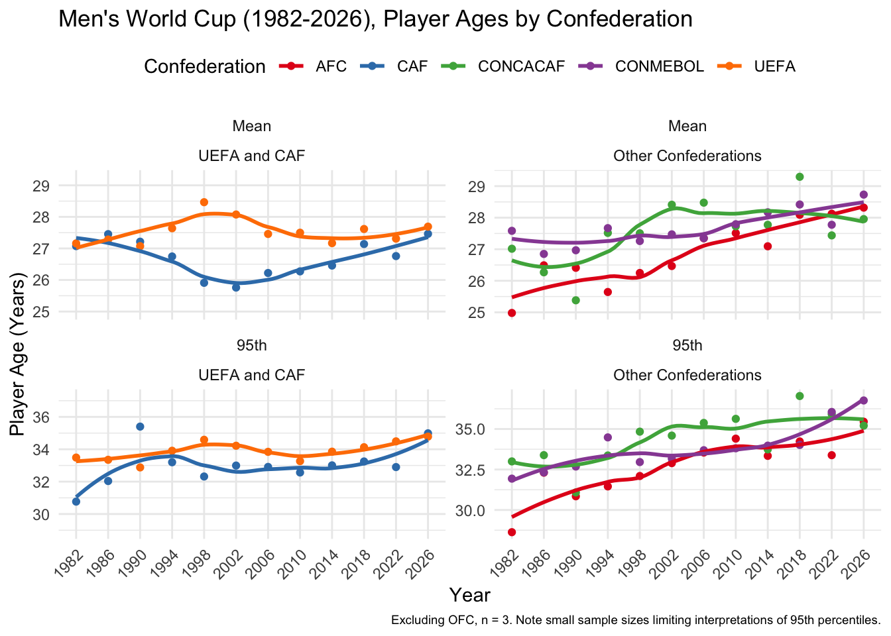
There are small increases in average ages, and more notable increase in upper percentiles among players selected to World Cup squads since the expansion era began in 1982.
This is particularly true for goal keepers and forwards, but midfielders and defenders also show small increases.
Increases in mean age cannot (yet?) be simply explained away by the new teams in the expanding tournament using different approaches to squad creation.
Thus, there does seem to be some trends towards older players and increases in longevity among World Cup players in the past several decades.
This analysis used an excellent World Cup database (© 2026 Joshua C. Fjelstudl, Ph.D. published under CC-BY-SA 4.0 license) of the 1930-2022 World Cups, with tables of players, squads, and team performances.6 Player and squad information for 2026 was scrapped from Wikipedia. Population data came from the WDI package, supplemented with government data for the separate countries of the United Kingdom. FIFA ranking data is unverified and should be treated with caution, but came from an updated version in a comment on Kaggle.
Age was calculated from the date of the start of the tournament, and I included anyone named to a squad, regardless of whether they saw playing time during the tournament.7
The data used as well as code for analyses are available in the github project repo, and the exact code for this post are available in this website’s repo.
This was just a fun mini-project for me (and to practice some web scrapping and give me a project to build out a website). I am primarily an NFL-football fan (Bear Down!), and just an every-4-years-bandwagon-World-Cup-football fan — so please let me know if you think there’s any soccer/football knowledge I am missing!
Note a slight difference in definition compared to the FIFA’s article and Instagram post: Uruguay’s Fernando Muslera turned 40 during the tournament — see the “Age at 16 June 2026” notation in the Instagram post. I calculated age for players at each tournament from each tournament start date, so Muslera’s age in my data would be 39.98631. In addition, I looked at all players named to a squads, while the FIFA article focused only on those who saw playing time and therefore excluded unused squad members.↩︎
Specifically, it seemed reasonable to suspect that there would have been greater injury and mortality among military-aged men in countries involved in the war that would have left fewer able-bodied men in their 20’s-40’s for the next couple decades when World Cup tournaments resumed. It may also be reasonable to suspect other influences, such as those generations being able to devote less time and energy to sports during their developmental years compared to younger generation coming after the war. Both of these aspects would be external shocks that favored youth in the decades to follow, and then after that time period it could have made it look like squads were getting older just as a correction to these influences.↩︎
The coefficient .0174 is the change in age per year. Tournaments are every four years, and there are 365.25 days in each year: .0174 * 4 years/tournament = .07 years increase per tournament and .0174 * 4 years/tournament * 365.25 days/year = 25.36 days increase per tournament↩︎
Goal keepers never made up more than 100 players per year before 2026, and all other position groups were below 200 before 1998. Thus, the downsides of using a maximum and focusing on an extreme individual or two would now apply to the 99th percentile.↩︎
Please see note in Data Details - this was exploratory and I did not find anything of interest, so I did not put any time into verifying the ranking data. This data came from Kaggle, but in particular this updated version was from a comment section.↩︎
At the time of downloading, 2026 data was not yet included↩︎
As noted above, there are a few seeming inconsistencies can arise based on these definitions: FIFA’s count of eight players over 40 included Uruguay’s Fernando Muslera who turned 40 after the start of the 2026 tournament but before his team’s first game; his age in my data would be 39.98631. They also only referred to players in prior tournaments who earned a cap — that is, played actual time — which would exclude, for example, unused squad members like the first 40+ year old Lev Yashin named to a squad with the 1970 Soviet Union team.↩︎